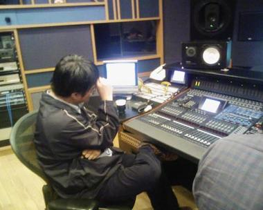
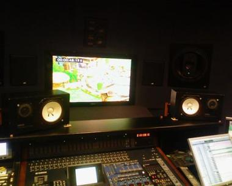

こにゃにゃちわ。毎週金曜のきむＰです。
お疲れさまです。
今週、はじめに”お便りコーナー”をはじめました。
ほんと、たくさん、お便りがきて驚いております！
なんていうか、まだＰＲ本格開始の準備期間で・・。
まだまだ情報も出てない・・。
そんな中、、お便り用のメイルフォームをつくっても
どれくらい反応あるんだろう・・？・・と、小々不安でした。
ところが、とんでもなく、たくさんののお便りがきました。
嬉しい驚きです。ありがとう！！
期待にこたえられるように、発売に向けて、がんばります。
ここで・・・、さっそく。↓↓↓
お便り紹介
「がんばれ！！
ただそれだけを言いたくて」(ゴンたろう)
「で、いつでるの？」(Nabee)
「王様じゃなく俺が主人公の
俺様物語も作ってください。」(俺様)
「早く映像が見たい。
いつ新しいＰＶはできますか？」（マヨネーズ）
いやー、たくさんの応援レターがきて、嬉しいですね～。
「がんばれ！！」のお言葉。ありがとう。本当にありがとうございます。
なんていうか、応援って本当にはげまされる。開発メンバのみんな、
がんばろうぜい。
いいものつくって、はやく遊んでもらえるようにがんばります！
「いつ出るのか！？」はまだはっきり答えられない。ごめん。
今プロモ準備期間なのね。準備できしだい、本格的に雑誌掲載再開。
そしたら、そこらへん見えてくるからちょっとお待ちください。
「俺様物語」っすか！？ それはもしや、トラ○スの物語りでは！？
次回作それでいってみます！？
「実機映像もっと見たい。」という御意見ご要望、多数・・。ですね。
そりゃそうですね。はい。
さてさて、兎にも角にも、今週のお便りの中で最も多かった意見はこれ。
意外かもしれませんが、
実は、これ、すぐ見れるかもしれません。
プロモ準備できていないのに、おかしいですよね。
でも見れるかもしれないのです。
どういうことかというと、こんな感じ。
今度、来週なんですが、ＧＤＣというアメリカでゲームの制作者が
集まる集まりがあります。
僕はすごくその集まりに興味がありました。
もしかしたら、海外のゲーム関係者の方と交流を深められればなぁ・・と
渡米する予定をたててました。
そのときに、せっかくだからプレゼントがてらＴＧＳＰＶのアレンジバージョンを
もっていこう・・と画策してたんです。
なんやかやで、僕自身がアメリカにゆくのはとり止めたんで、
このバージョンのＰＶは作るのやめようかな・・・・と思っていましたが、
急遽、うちの海外担当、ムッシュ・ルイが新ＰＶを持ってアメリカに
わたることに決定。
臨時の臨時だけど、もし海外の媒体の方とコンタクトできたら・・。
新しい映像がまじった動画を海外で緊急公開してくれたりするかも！？
という流れ。

※↓写真は２月１４日 真夜中 デルファイのスタジオにて

・・・ちなみに、いったん諦めかけたＰＶを、
必死で昨夜、音のミックス作業してました。
ちょっと無理した。今もまだ眠い。
音楽も新曲のっけといたよ。
ちょっとやりすぎたから、ＰＲの高島さんに怒られるかもしれませんが、
まぁ、ええでしょ。ね！？
※あ、あれね、あくまでＴＧＳのアレンジバージョンだし。
新アクションとかシステムとか、大事な要素諸々はまだ、
調整中なので公開してないですよ！
ちょっと新しい風景が見れますってくらいだからね～！
はぁ～、さてさて、次回のブログは・・・2/22
なにやら、なにかしら、なにをなにして、
御意見ボックスの質問に
お答えしてしまいますかね。
わー、どれに答えればいいのかなぁ。
大変だぁ。
こんにちは。初登場のＰＲ大臣・中村です。
ＰＲ。ぱぶりっく・りれーしょんず。「広報」と呼ばれることが多いですが、
ここではプロモーション全般を指すコトバとして使わせていただきます。
そう！
『王様物語』のＰＲがそろそろ本格スタート！（なの!?）というタイミングでして。
「ＰＲ大臣もボチボチ、皆さんにご挨拶をしときなさ～い！」
というキムＰの発言で、登場とあいなりました。
単にキムＰがブログを書くのをサボりたいからじゃないだろうか？
と、勘繰ってみたり。どうなんですかキムＰ。
----------------------
さてさて、今回のブログですが…、ある昼下がりのこと。
福岡から川口ディレクターが呼び出されたというウワサを聞いて、
打ち合わせ現場の某喫茶店に向かったのですが…。
その模様をレポートいたしましょう。
わりとナマナマしいかもしれませんよ。ドキドキ。
----------------------
木村「じゃあ、そんな感じかな」
川口「そうですね、イケると思いますよ」
---うわ！もう終わろうとしてる！ギリギリ間に合った！
木村「おや、ＰＲ大臣。なんか用？」
---冷たいですね。ブログのネタにしたいので話を聞かせてください。
木村「くるしゅうない」
---キムＰ、今週のアタマに、福岡出張行ったばっかりじゃないですか？
木村「そうなんだけど、僕が福岡に行ったときには川口監督が倒れてて、
会えなかったんだよね」
川口「木村さんと会いたくないから仮病を使ったわけではありません。
本当に倒れていました。ホントにホント」
木村「（疑惑の目で）何度も繰り返すところが怪しい。まあいいか。
福岡出張はもちろん有意義なものだったけど、やっぱり監督とは
会って話をしないといけないと思ったので」
川口「遠路はるばる、呼び出されました」
---今日の打ち合わせはどんなことを？
川口「今、開発として、最後の頑張りどころですので。追い込みに向けて、
プログラムの問題点の洗い出しとレベルデザイン部分の詰め、ですね」
木村「監督はプログラマ出身だから、そのへんは専門だね」
川口「そうです。この際、場合によっては、僕も現場に降りてプログラムを
組んでしまおうかと思っています。
（指をパキパキと鳴らしつつ）腕が鳴りますね」
---有意義な打ち合わせだったみたいですね。
川口「木村さんとお話することによって、9割がたクリアになりました。
問題点がここまで見えていれば、もう大丈夫だと思いますよ」
---そういえば、お二人はいっしょに仕事をするのは初めてですか？
川口「はい、初めてです」
---キムＰの第一印象はどうでしたか？
川口「悪かったですね（キッパリ）」
木村「え～そうだったの？」
川口「なにしろ、物事をはっきり、ズバズバ言ってきますからね。
それに、木村さんのアイデアは奇抜すぎて、
その良さが理解できなかったですね」
木村「…そ、そう…だったんだ…（明らかに落ち込むキムＰ）」
---あ、えーと…、今はどうですか？
川口「印象は180度変わりました。
頼りになるし、物事を決めていくことができるし」
木村「（伏せていた顔をあげて）え…？」
川口「もはや、開発にとって、なくてはならない存在です。
問題点の把握と的確な対処。素晴らしいです」
木村「（恍惚の表情を浮かべ）もっともっと～もっと言って～」
---キムＰは、川口ディレクターの印象は？
木村「監督は人の話を理解する力がすごいのよ。
あまりこまかく言わなくても分かってくれる。
ただ、呼び出し回数は一番多くて苦労をかけてるけど」
川口「いえいえ、今後も、どんどん呼び出してください」
木村「うん、もちろんそのつもり」
川口「……お、お手柔らかに～！」
----------------------
さて、最後は話が脱線してしまいましたが、いかがでしたでしょうか？
今後も、まさに追い込み状態に入った開発陣の様子を
できるだけお伝えしていこうと思います。
それでは、コッソリ撮った写真をお楽しみ頂きつつ、また次回～。
※ヤバイ部分は隠しました。ホントは見せたいけど…
・盛り上がるミーティング

・キムＰの手と、打ち合わせのメモ

たとえば簡単なところで、僕が大好きなギャップは
幼稚園児くらいの子がボソっと
大人じみた皮肉を言ったりするシチュエーション。
まじめな大人が、突然悪ふざけを始めて、手に負えない。
まわりの人が目が点になるシチュエーション。
たまらなく好きなんですよね。
日常の中でのギャップって、なんでこんなに面白いんだろうか。
テキストやキャラクターデザインで出てるといいなぁと思うんですね。
どうだろう、でてくるかなぁ。テキスト楽しみだなぁ。
つうか、自分で書いてる可能性もなきにしもあらずか・・（笑）
お仕事力２５％
わるふざけ４０％
皮肉５％
体脂肪２５％
実は気を抜くとすぐ、悪ふざけ４０％がふきだしてくる。
もし、バカなことをしだしても、許してください。
ああ、前置きが長くなりすぎました。
さてさて、本題、今回は福岡滞在の・・ってとこですな。
今回の福岡ミーティングの目的は二つ
①ロムの進捗確認
１月末に遅れてる項目２点、原因追求。
１２末に懸案になってた箇所がきまったかどうか確認。
あと、いまいち、かたまってない部分を決めにかかる。
休憩１０分
後半３時間の長丁場。
短い滞在時間のなか、集中してロジカルなところと
インスピレーションを発揮するところを一度にやりきるので
とんでもなくつかれます。
まず、最初の進捗確認のミーティングで
まともな仕事力（大人力？）を使い切ってしまいます。
そして、開発とゲーム仕様に関して確認がはじまると
主成分の悪ふざけ４０％が噴出そうとします。
と思いとどまる大人な精神はどこえやら。
おもしろかったらええんちゃう？という気楽なフィーリング最高潮に。
ほんと、開発のみんな、特に制作ミーティングと開発ミーティングに顔をだしている
ディレクターや進捗担当の二人はほんと、目が点になっちゃうよね。ごめん。
でもね、でもね、ゲームってさ、
大人の悪ふざけを、たんまりつめこむべきちゃう？
だからゲームミーティングするときって、
悪ふざけレベルをお互いに競っていいんでないかな。
「まじめに」というよりは
これでもかってくらい、「アホなこと」を言い合って
暴走しあってもいいかなと思うんだよね。
ほんで、たまにエキサイトして喧嘩したりね。
気がつくと自分だけ、遠くに走っていることがあったりもするけど
ま、そういうのもありかなぁと。
悪ふざけで悪巧みなわけだし。
なんか、うん。
悪巧みしましょうよ。みんなでさ。
アップするまで、ガンガン勝負かけていこう。
週はじめに福岡出張したばかりだというのに
緊急で川口監督を東京に呼び出しました。
～なぜに、この時期、監督が呼び出されたのか！？～”
お楽しみに。
みなさん、ごきげんいかがでしょうか。
週末のキムＰです。
昨日、夜な夜なおうちに帰る途中、ミスタージョンと一緒になりました。
彼はとてもでかくて、マッチョです。
海外チーム所属の人なんですが、
ぱっとみ、NO MORE HEROESのデストロイマンみたいな人なんですよね。
ま、それはおいといて・・・。
その彼が言うんですよ、帰りぎわに・・。
「よい週末を！」って。
あ・・しまった。
週末・・だ・・・。
ブログ更新してないじゃないか！！！
でもそれに気がついたのは渋谷駅井の頭線の前・・・。
時すでに遅く・・ということで、やむなく更新は土曜の今・・となりました。
くそー。来週こそは金曜に更新するぞー。
さてさて、本題です。
今日は最後の一人の「ｘｘｘｘさん」のお話し。
実は、王様物語、ゲーム内に登場するキャラクターデザインはずいぶん前に
ぜーんぶ終わってるんです。ですが、やっぱりそこは、なんですかね・・・
途中でおもいついて、いれたくなるキャラって出るじゃないですか・・。
わがままいって、入れてもらう話にしたのはいいものの。
１２月の末からその１キャラを決めるために・・・
毎週、倉島さんと、ああだこうだとやりとりしてました。
だけどぜんぜん、決まらない。
なんつうか、私と倉島の適等フィーリングだと、普通１キャラに
１ヶ月かけないんすよ（笑）
それが、えらい時間かかっちゃった。
・・で、昨日ついに、８割りがた「ｘｘｘｘにしましょう」的なところが見えてきました。
今日はそのやりとりで使われた、ラフをお見せしましょう。
（また捨てられそうになったところをサルベージしました。）
これです↓

ちなみに、やぶかれた位置のものは、いきの絵なんですよね。
ひゃぁぁぁ～。
・・でで、でけました。とにかく、方向性みえた。
あ～、これで本当にキャラデザインは終わりそうだ。
よかった～。
※来週は福岡にいってきます。
開発の進捗具合はどうなっていることやら、はらはらどきどき。
ちょっくらのぞいてくる。
次回は緊急、福岡開発現場レポートなのだ。
お楽しみに！
こにゃにゃちわ。キムＰです。（ついに自ら言うことになったか・・・）
みなさん、お元気ですか？
ゲーム遊んでますか？ゲーム作ってますか？
今日はゲーム作りに大切な魔法の言葉を発表します。
それは 「クラッシュ＆ビルド」
無茶苦茶、僕的には怖い言葉。まかりまちがうと、クラッシュしたままプロジェクトが
終わる・・とかもありえる。
壊す時期や、再構築するマンパワーや期間をちゃんと想像しておかないと、
プロジェクト全体がクラッシュしてしまうかもしれないという、恐ろしい魔法の言葉。
でも、この言葉が超大事なんよね。
ものづくりってしてるときって、・・・・無意識に”壊すこと”を恐れてしまうわけですが
これを意識的にやらないと乗り越えられない壁があるのも事実なんですよね。
ゲームづくりって、そういう怖さを乗り越えないといかんのよね。
すんごく、勇気のいることなんです。
新年そうそう、このことを福岡のみなさんと
感覚的に共有したいなーとおもい・・・。
実は、手紙を書きました。
最初、Ｅ－メイルじゃなくて郵便局に頼もうかと思ってたのね。
そっちのほうが印象強いかなと思って。
でも、結局「早く伝わるほうがいいよなぁ。」と思ったのでネットで送った。
・・で、今日掃除してて、
シュレッダーにかける前に、ゴミ箱で封筒がみつかったので
その手紙を公開することしました。
※情報公開できないところは塗りつぶしてます。ご容赦ください。

うーん、ほんちゃんの露出はもうちょっい先です。
でも、なんか待ちくたびれてる人もすんげーいて、
お葉書に「いつでるんだー」とか「質問ですが・・」みたいなのが着ちゃうんですよね。
ほんと、ごめんなさい。もうちょっと待ってください。
あ・・・いいことおもいついた。
設定画とかボツネタとか、ほんちゃんの記事発表前に色々
ちらちらチラリズムで出しちゃおうかな。
来週出せるやつってなんだっけ・・・・。考えとかないと。
うーん、ここで勇敢に一言。
「乞うご期待 来週までお楽しみに！」
（笑）


 クリエイターズBLOG トップ
クリエイターズBLOG トップ